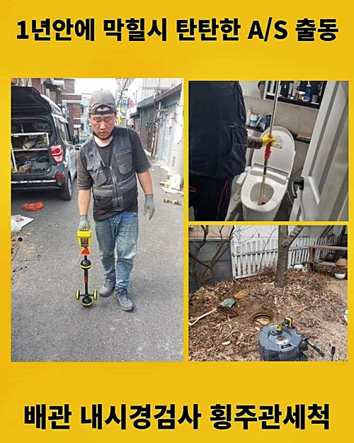
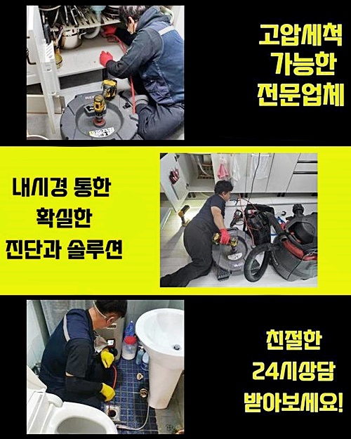
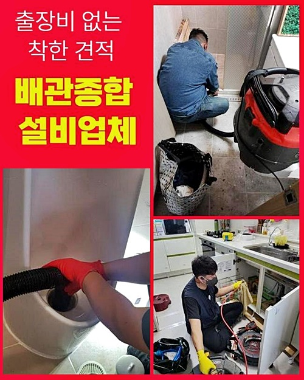
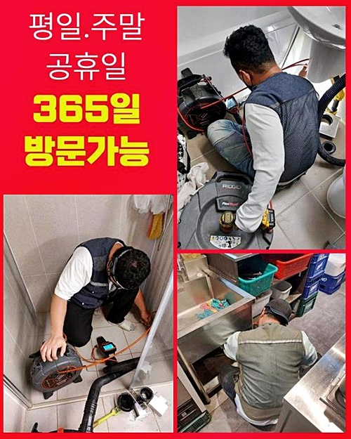
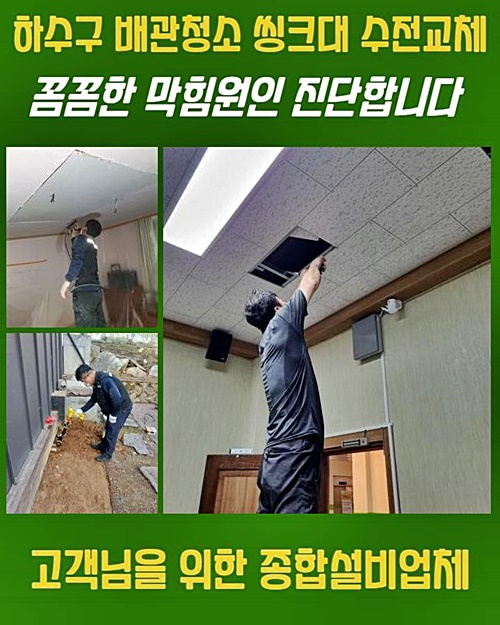
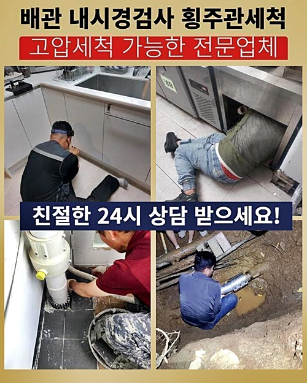

🏠 고천동변기역류 내손동 하수관고압세척 설비
용인시 처인구 배관막힘 전문 시공 후기

📋 작업 개요
- 위치: 용인시 처인구, 수원시 영통구, 화성시 동탄
- 서비스 유형: 배관막힘, 누수수리, 고압세척, 내시경점검
- 작업 일시:
- 업체명: 하수구수사대 (010-5615-2118)
🔍 문제 상황
고천동변기역류 내손동 하수관고압세척 설비
배수라인이 막혀버린거면 내버려두기보다는 조속하게 방안에 대해 꾀하는것이 좋은데요
위 문제들을 신경써주지않으면 불현듯 물들이 솟구칠 수도 있고 오수가 새어버리는 경우로도 이어지게 되면서 작업에 차질이 생겨나게되요
배수로에서 역류증상이 생겨난 경우라면 할 수 없겠지만 앞서서 예방하고자 전문인력의 도움들로 해결해 보시는 것이 좋은데요
금일 찾아뵈었던 장소는 상업시설과 주거시설이 같이 있던 경우였는데요 위와같은 건축형태면 복잡한 양상들을 가지고있는 사례들이 꽤 많은 탓에 유선으로는 안내가능한 사항들이 제한되어 있어요
이러한 상황으로 인하여 올바르게 된 원인 규명을 하고자 현장당도를 하고서 진단을 해보고있죠
당도하니 상가들과 이어져있는 가정집 배수관이 문제를 일으키게 되고 솟구치는 증세가 목격되었는데요
역류들이 발현되면서 복잡성까지 결부될 시 서둘러 기기의 운용이 수행되어야합니다
그리하여 이런 사태가 벌어졌다면 꼭 이런저런 문제양상을 고쳐낸 업체께 의뢰를 하시는게 좋죠
방문 후 의뢰인분의 내용전달을 바탕으로 문제들을 점검했어요
특정지점이 아니고 복합적으로 여러지점이 막혀버린거면 점검해봐야하는 위치가 메인 하수라인이죠

🔎 원인 분석
💡 전문가 진단: 정밀 진단 장비를 사용하여 슬러지의 고착 여부를 판명하고 타격/세척 작업을 실시했습니다.
공용배관을 살피기위하여 지하로 이동하여 천장부에 자리한 하수관으로 가보았는데요
공동하수관을 확실히 뚫어도 이부분과 연결되어있는 관의 문제들이 잡음없이 시정됩니다
그렇지만 천정쪽의 라인이므로 작업을 수행하기엔 위험이 따랐는데요
이런 경우일땐 고소사다리등을 사용해서 전문진이 올라가죠
공동배수관이 막혀버렸을 시 내부쪽을 흡입하여 문제를 해결해주는 석션으로는 뚫어내는것이 쉽지않아요
샤프트기기로 스케일링을 한다던지 상황마다 고압수청소가 요구되는데요
무엇이 요구되는지 내측을 진단한 뒤 왜 발생되었는지 파악하기위함으로 내시경을 투입했습니다
내시경장치로 깊숙한 지점까지 살피니 긴 기간에걸쳐 쌓이게된 기름성분의 이물질들이 통로를 방해하여 거꾸로 역류되는 모습이였습니다
곳곳마다 빠져나가지를 못해 자연스럽게 가정과 이어져있는 가지관로로 배수시킨다면 오수는 걷잡을 수 없이 넘칠거에요
그리하여 이 배수관을 의뢰인분에게 설명하고 세척을 수행해주었습니다
관로들이 붉은색으로 보이는데 이런식으로 보이게되는 연유는 벽측에 잔해가 존재하기때문이죠
청결한 하수도라면 붉은색을 띄지않고 군더더기 없이 관찰되나 이렇게 잔해물이 많다면 내시경장비에 적나라하게 목격됩니다

🔧 작업 과정
저희 하수구막힘의 업체가 간 곳의 증상들을 고쳐낼 생각으로 샤프트기기를 운용해도 무턱대고 투입시키면 안되고 필히 배관 내부 배수구를 확인해주며 진단을 실시하죠
혹여 과도한 힘을 줄 경우 배수시설들을 다치게하고 잘못하면 누수증세가 발발할 가능성이 높아 실력에 의심이 되지않는 전문인을 통하여 진행하시는 것이 우선이죠
플렉스 샤프트 내시경장비를 통해 꽤 오래도록 탈락시켜주는 수순을 밟아나갔는데요
저희전문진이 방문드렸었던 곳의 이물질들이 장기간 고착화가 진행되 딱딱해진 슬러지들이 대량이라 지속적인 단계가 필요했습니다
공동배수관의 문제가 발발하게 되면 크기들이 크고 길게 자리하고 있어 각각의 위치에서 뚫어주는 작업들을 실시하는데요
이런 증상들을 바로잡을 목적으로 욕실공간과 근방에 존재하는 창고부분에도 합쳐진 배수관을 빈틈없이하는 단계도 필요했죠
점검구들을 조심성없이 다루면 오염물이 떨어지게 될 불미스러운 일이 불가피하기에 비닐을 써서 보양까지 수행해주었습니다
아래부분으로 수도가 빠져나가게끔 연결을 해보았어요
만일 이런 부분까지 주의하여 진행해주지 않는다라면 뚫는것은 가능하겠으나 마무리과정은 깔끔한 경우는 드물죠
해당 사항들도 전문진이 함양하고있는 꼼꼼함이라 생각합니다
금일은 욕실내부와 연결되어있는 하수라인으로, 오염원이 가득했었습니다 일반적인 이물이 막아서는게 전형적이겠으나 있어선 안되는 쓰레기가 오류가 될 수 있어요
내측을 파악해보니 샤프트기기론 확실하게 세척하는것이 쉽지않겠단 생각이 들었죠
샤프트로도 마땅한 해결이 안되면 적합한 크란즐을 통해서 세척해줘야합니다
차와 이어진 것보다는 작으나 성능에 있어선 뒤지지 않아서 방문장소와 적합한 장비들을 선정하는것 또한 전문가의 자질이라고 생각한답니다
뚫기를 진행하고서 위치별로 올바르게 청소되었는지 균열들이 없는지 체크하고 통수검열을 수행하였는데요
저희전문진이 찾아뵈었던 장소라면 내시경장치로 문제가 사라진건지 검열로 들여다봐야 마침내 시공들이 이뤄졌다고 생각하시면 됩니다
최종적으로 이상없이 청소가 일단락되었습니다 의뢰자께도 완벽히 내부를 공유시키고
그간 수도의 이용이 어려웠을 분들께서 한시름 놓으실거라는 여기니 보람까지 느꼈어요


✅ 작업 완료
문제들이 발발한 탓에 수리 시 여러 잔해가 확인이됩니다
증상이 발현되었을 경우에 빨리 처리할 수 있게 전문진에게 맡길 시 안정성있게 해결이 가능할지라도, 귀찮은 탓에 미루게된다면 비용과 시간을 크게 소모하여 후회하며 진행하게될지 몰라요
심한 증상에 처해있더라도 저희들은 언제라도 안정성있게 해결합니다
저희전문진은 문제를 보고 거쳐야하는 과정들만 수행하고있기에 우려없이 도움을 청하시면 되겠습니다
상업시설들과 주거지와같이 수도가 있어야하는 곳일 경우 어디라도 문제를 해결해주는 것에 도움들을 드리니 항시지 마음놓고 저희를 찾아주시면 되십니다



⚠️ 하수구 배관 막힘 예방 및 관리 가이드
- ✅ 머리카락, 비닐, 물티슈 등 물에 분해되지 않는 이물질은 절대 흘려보내지 마세요.
- ✅ 기름기 많은 식기는 설거지 전 키친타올로 먼저 기름때를 닦아내세요.
- ✅ 주기적으로 배수구에 뜨거운 물을 가득 부어주어 유지방 고착을 방지하세요.
- ✅ 작업 후 1년 이내 재발 시 무상 A/S 보증 서비스를 제공합니다.
💡 핵심 정리
- 확실한 장비 작업(내시경 점검 및 샤프트 스케일링)으로 원인을 뿌리 뽑습니다.
- 작업 후 1년 이내에 동일한 부위 재발 시 100% 무상 A/S 서비스를 보장합니다.
- 서울 · 경기 · 인천 전 지역에 24시간 언제든 긴급 출동할 수 있도록 항시 대기 중입니다.
❓ 자주 묻는 질문 (FAQ)
🚨 용인시 처인구 배관막힘 문제로 고민이신가요?
정확한 원인 진단과 확실한 시공으로 재발 없는 해결을 약속드립니다.
24시간 긴급 출동 | 서울 · 경기 · 인천 전지역 | 1년 내 재발 시 무상 A/S